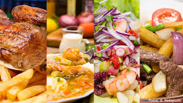
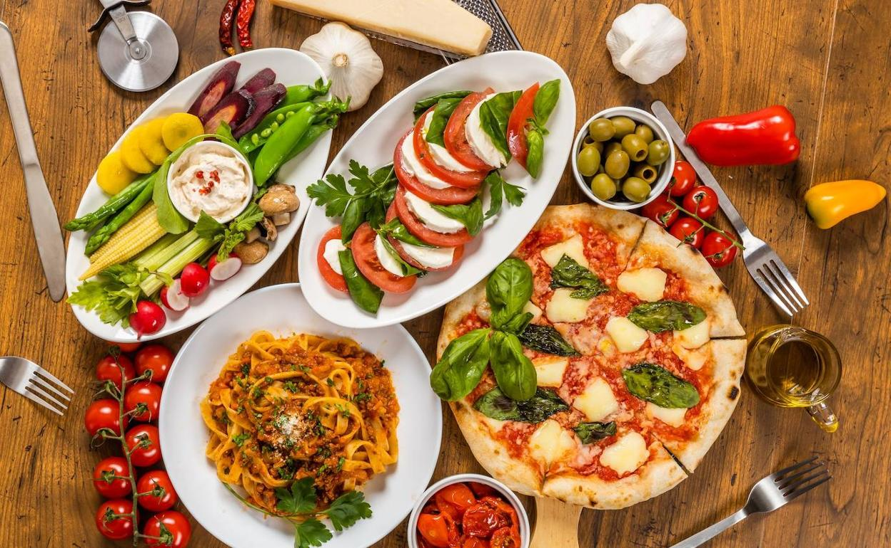
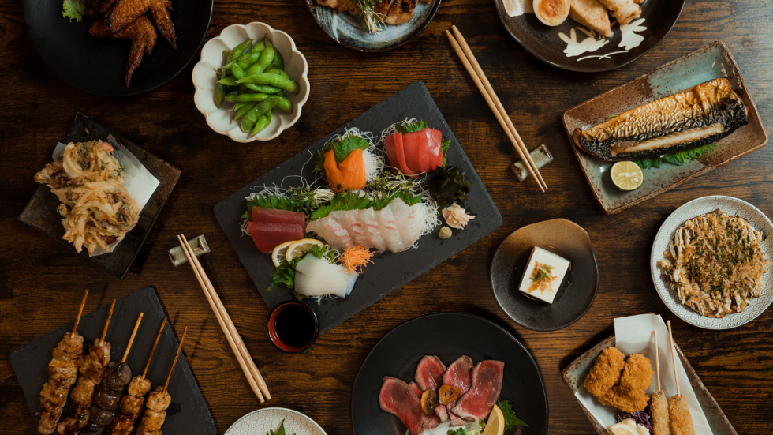
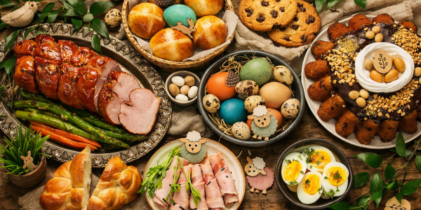
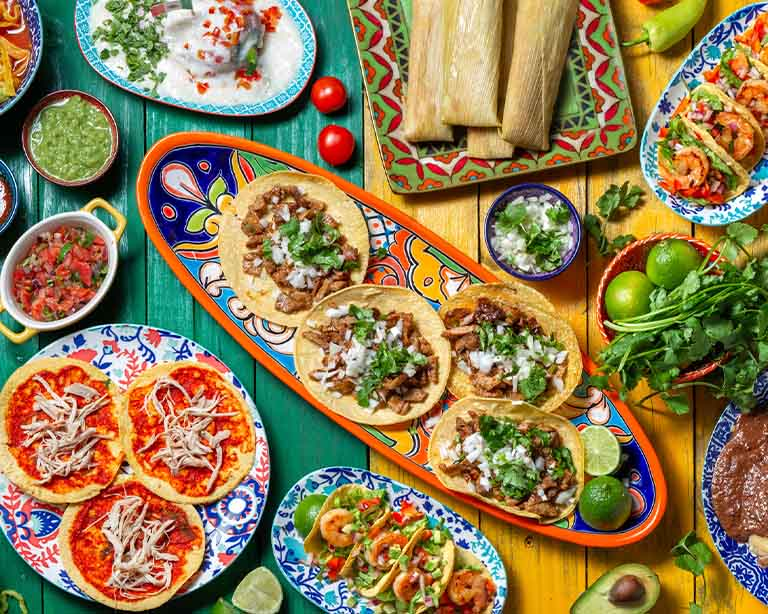
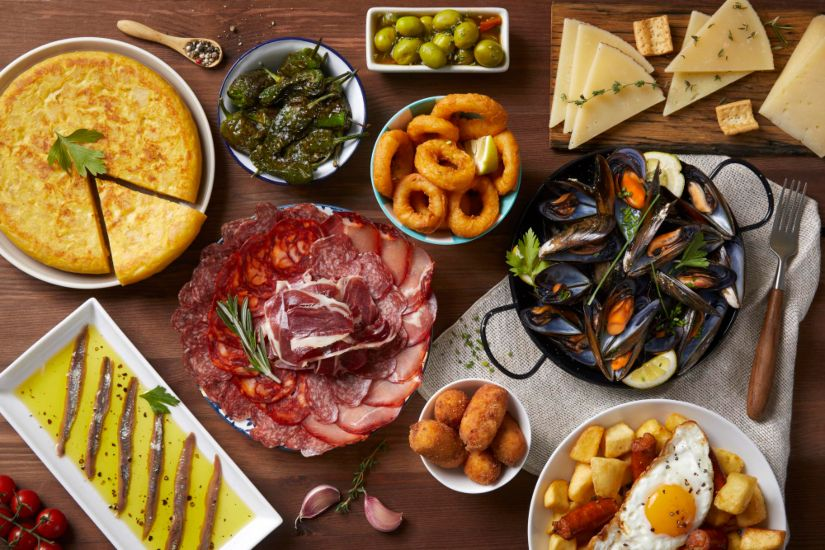

Explora recetas, ingredientes y platos típicos de diferentes países y culturas gastronómicas.

Disfruta del ceviche, ají de gallina, lomo saltado y más.

Descubre pizzas artesanales, pastas y lasañas.

Sushi, ramen y la esencia de la cocina oriental.

Alta cocina, postres gourmet y recetas tradicionales francesas.

Tacos, enchiladas y sabores intensos de la cocina mexicana.

Paella, tapas y recetas mediterráneas llenas de sabor.
Regístrate gratis y descubre nuevas recetas de todo el mundo.
Perú posee más de 4,000 variedades de papa, siendo uno de los países con mayor diversidad de este alimento.
La pizza moderna nació en la ciudad de Nápoles durante el siglo XVIII.
El sushi originalmente era un método para conservar el pescado utilizando arroz fermentado.
El chocolate fue consumido por las antiguas civilizaciones maya y azteca mucho antes de llegar a Europa.